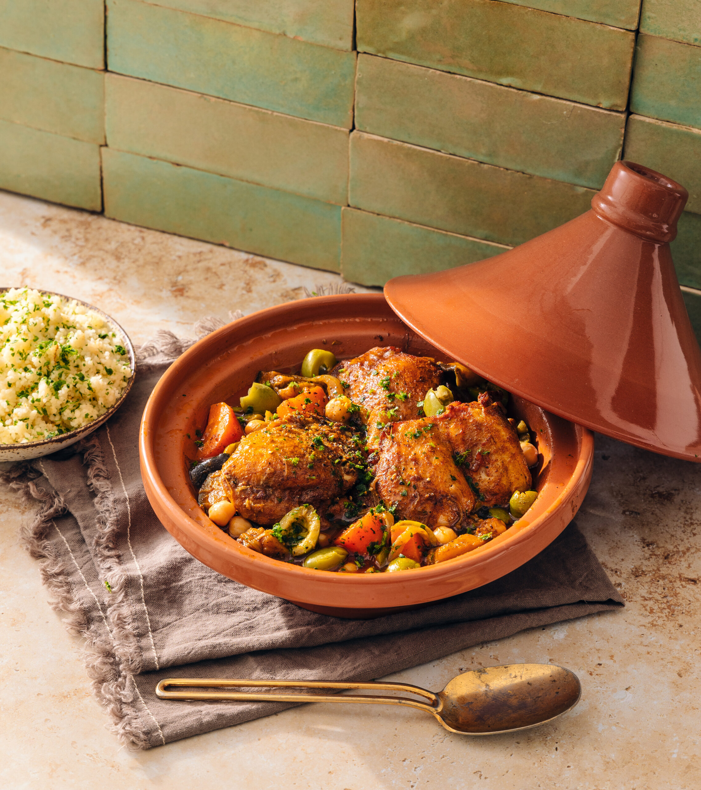

Traditional Recipes
Discover ingredients and cooking instructions for dishes enjoyed across different African communities.
Browse recipes →Our story
Tastes of Africa celebrates the flavors, people, and traditions that make African cuisine an important part of our shared cultural heritage.
Explore Our Recipes
Why we exist
Our mission is to introduce visitors to African cuisine through accessible recipes, regional food traditions, and stories about the ingredients behind familiar and lesser-known dishes.
We want people to discover the diversity of African food, appreciate its cultural significance, and feel encouraged to explore dishes from different communities.
A taste of discovery
Explore African food through three connected experiences.
Discover ingredients and cooking instructions for dishes enjoyed across different African communities.
Browse recipes →Explore how geography, local ingredients, and cultural exchange shape food across the continent.
Explore regions →Learn about the traditions, communities, and culinary practices connected to African dishes.
Discover our homepage →What guides us
Your table is waiting
Find a new favorite dish, learn about its origins, and bring a little more African flavor into your kitchen.
Start Exploring